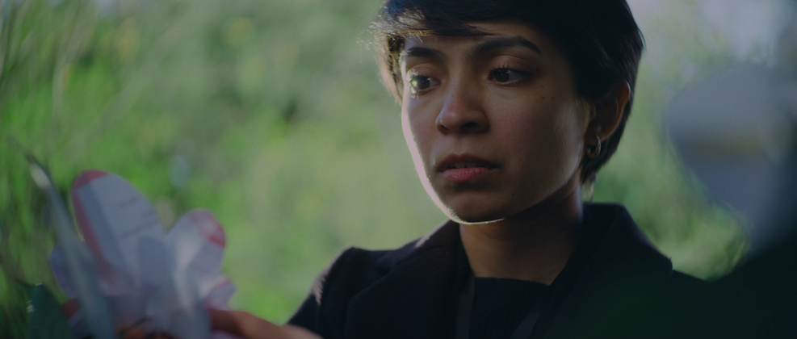

14mins, 2023
Grace Ridhi turns up to Mr Freeman's house to demand he pay for all the overdue bills he owes the council. Mr Freeman prefers a more spiritual approach to such things.
Starring: Senora D'Mello and Tom Allenby
DoP: Will Knights
Music: Will Lockyear
WR SAUNDERS + HIGH ALTITUDE FILMS 2023